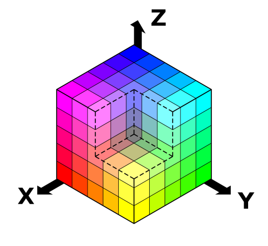

Modelo RGB
El modelo de color RGB (del inglés Red, Green, Blue) indica la composición de color en función de la intensidad de los colores primarios que lo componen. Gracias a este modelo se representan los colores mediante la síntesis aditiva, la suma de sus colores. Para determinar la proporción en la que se encuentran los colores primarios en un determinado color, se asigna a cada primario un valor entre el 0 y el 255. Este rango viene dado por su codificación, en la que se emplea 1 byte (8 bits).
Si representamos gráficamente el modelo RGB obtendremos un cubo definido por sus ejes X, Y, Z. Cada uno de estos ejes se corresponde con cada uno de los colores primarios, de esta forma el eje X se corresponde con el rojo primario, el eje Y con el verde primario y el eje Z con el azul primario. De esta forma, podemos observar como a mayor numero más intensidad del propio color. La ausencia de color, es decir el color negro, se obtiene cuando las tres ejes son 0: (0, 0, 0), mientras que el color blanco se forma con los tres ejes en su máximo valor: (255, 255, 255). Por ejemplo:
| Rojo | → | (255, 0, 0) |
|---|---|---|
| Verde | → | (0, 255, 0) |
| Azul | → | (0, 0, 255) |
La codificación dodecadecimal del color permite expresar fácilmente un color concreto de la escala RGB, utilizando la notación hexadecimal, como en HTML. Este sistema utiliza la combinación de tres códigos de dos dígitos para expresar las diferentes intensidades de los colores primarios RGB .
| Rojo | → | #ff0000 |
|---|---|---|
| Verde | → | #ff0000 |
| Azul | → | #0000ff |
Modelo HSL
El modelo HSL (Hue, Saturation, Lightness) define un modelo de color según los componentes de sus constituyentes. Se representa gráficamente como un cono doble o un doble hexágono.
- Los dos vértices en el modelo HSL se corresponden con el blanco y el negro.
- El ángulo se corresponde con el matiz
- La distancia al eje con la saturación
- La distancia al eje blanco-negro se corresponde a la luminancia.
El modelo HSL divide sus canales en:
- Canal H (Hue): Se traduce como tonalidad (HUE). Este representa a los colores primarios junto con todos sus matices intermedios (naranjas amarillos, morados…). Dentro del círculo cromático se establece el rojo primario en 0º (y en 360 ya que se trata de una circunferencia), el verde primario en 120º y el azul primario a 240º.
- Canal S (Saturation): Se trata del canal de saturación lo que representa la cantidad de color. De tal manera que si cualquier color pierde saturación tiende hacia el gris. Si la gana, se aleja del gris y gana “color”. El valor mínimo de saturación para cualquier color es el gris, mientras que el máximo es el más intenso. Sus coordenadas cilíndricas se representan mediante en el radio del cilindro.
- Canal L (Lightness): Se trata del canal de luminosidad, se entiende como la cantidad de luz que presenta el color. El rango de valores de este canal se suele referir como un porcentaje. En una luminosidad máxima del 100% se obtiene el color blanco, mientras que a una luminosidad mínima del 0% se obtiene el negro. En su representación cilíndrica este valor se representa su coordenada según la altura.
Modelo HSV
El modelo de color HSV es una transformación no lineal del modelo RGB en coordenadas cilíndricas de manera que cada color viene definido por las siguientes dimensiones: HSL (Hue, Saturation, Value). Los primeros parámetros, tonalidad y saturación, se corresponden con los valores explicados anteriormente en el modelo HSL. La definición del canal V es:
Canal V (Value): Representa la altura en el eje blanco-negro. Los valores posibles van del 0 al 100%. 0 siempre es negro. Dependiendo de la saturación, 100 podría ser blanco o un color más o menos saturado